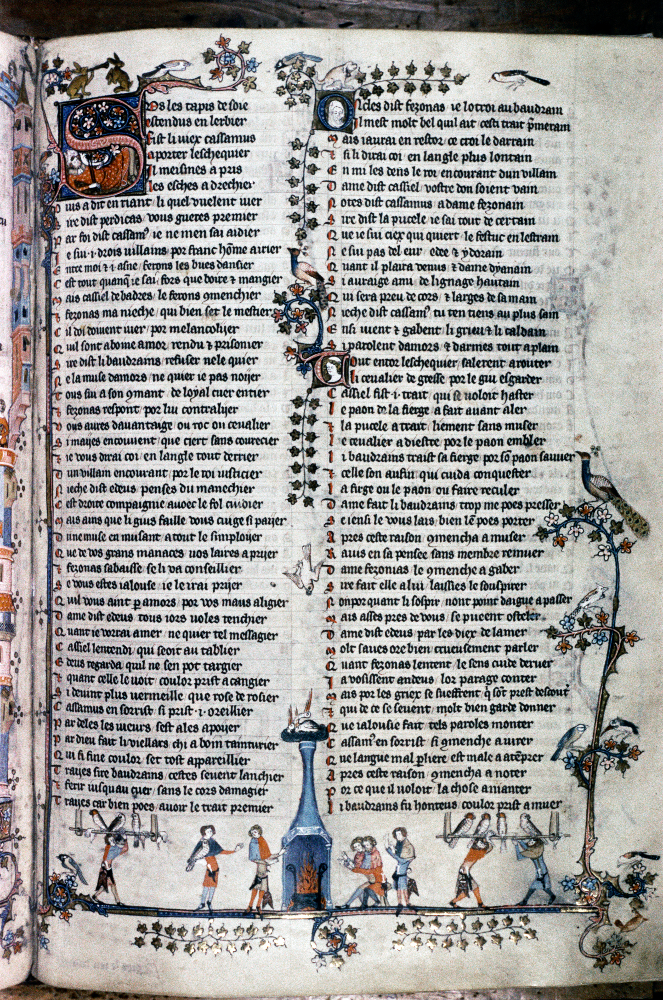

Design system
Loading
Brand source of truth for The Mews by Hawk & Heron.
The palette is rooted in warm, yellowed parchment tones with rich ink-dark text. The goal is a non-digital, tactile feel — like aged paper, worn brick, or printed letterpress.
#f5f0e1
#faf6eb
#e8dfc8
#2c2418
#4a3f2f
#7a6f5f
#8b7355
#6d5a42
Cormorant is a Garamond-inspired display serif with high contrast and elegant proportions. Used for headings and the hero title where its dramatic strokes shine at large sizes.
Alegreya Sans is a humanist sans-serif with warm, calligraphic undertones — designed as a companion to the Renaissance-inspired Alegreya serif family. Its open letterforms and even stroke weight make it highly readable at small sizes, ideal for timeline cards, data labels, navigation, and body copy. The organic warmth avoids the clinical feel of most sans-serifs, pairing naturally with Cormorant's historical character.
| Token | Value | Usage |
|---|---|---|
--font-display |
'Cormorant', Georgia, serif | Headings, hero title |
--font-body |
'Alegreya Sans', Segoe UI, Roboto, sans-serif | Body text, buttons, nav, timeline cards, data labels |
--font-mono |
'Courier New', Courier, monospace | Code snippets |
by Hawk & Heron
Body text at 18px / 1.6 line-height. The quick brown fox jumps over the lazy dog. Alegreya Sans provides warm, readable body text that complements Cormorant's display character.
Pill-shaped with a 1px border. Transparent background that gains a warm tint on hover.
| Property | Value |
|---|---|
| Padding | 10px 22px |
| Border radius | 999px (pill) |
| Border | 1px solid --color-border |
| Font | Alegreya Sans, 1rem, weight 500 |
| Hover background | rgba(120, 100, 70, 0.12) |
| Token | Value | Usage |
|---|---|---|
--max-width-page |
960px | Hero, outer container |
--max-width-content |
720px | Cards, text sections |
--radius-sm |
6px | Code blocks, small elements |
--radius-md |
12px | Dropdown menus, swatches |
--radius-lg |
18px | Cards |
--radius-pill |
999px | Buttons, avatar, nav links |
A medieval manuscript illustration (Bodleian Library, MS Bodl. 264, fol. 128r) is applied as a fixed
full-bleed background via body::before at 7% opacity.
This gives a faint, textural warmth without competing with content. The
pointer-events: none ensures it never intercepts clicks.

| Token | Value |
|---|---|
--color-border |
rgba(120, 100, 70, 0.25) |
--color-border-hover |
rgba(120, 100, 70, 0.5) |
--color-shadow |
rgba(60, 50, 30, 0.12) |
| Element | Text | Style |
|---|---|---|
| Title | The Mews | Cormorant 700, clamp(3.5rem–6rem) |
| Subtitle | by Hawk & Heron | Cormorant 400 italic, --color-ink-faded, no filter |